Automatic Transmission Assembly/Inspection

Bearing And Race Locations
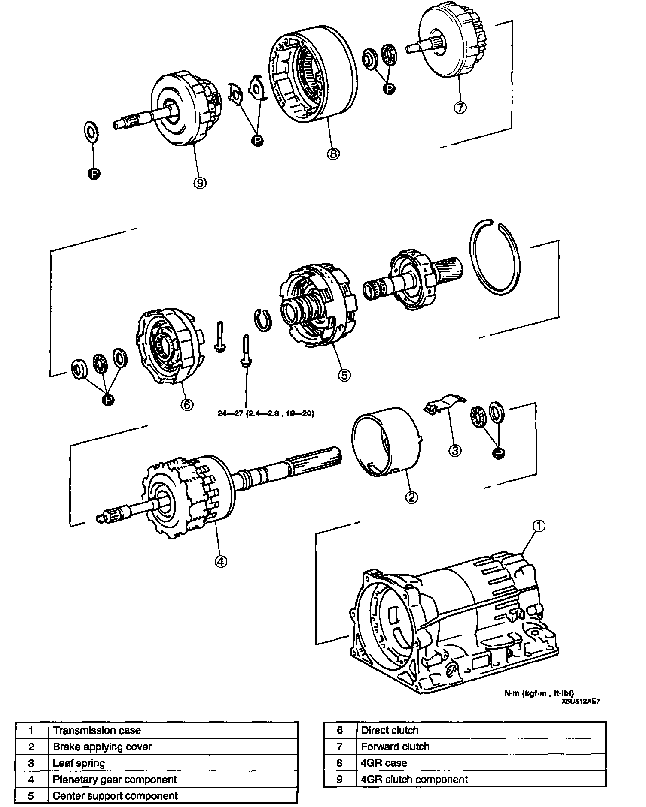
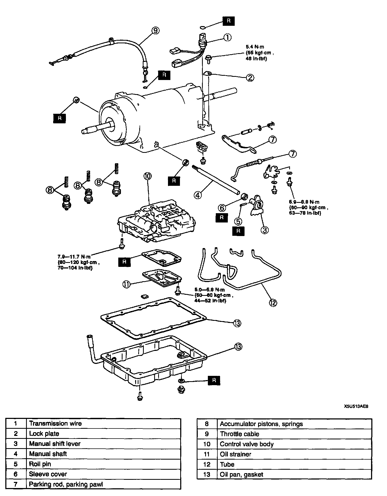
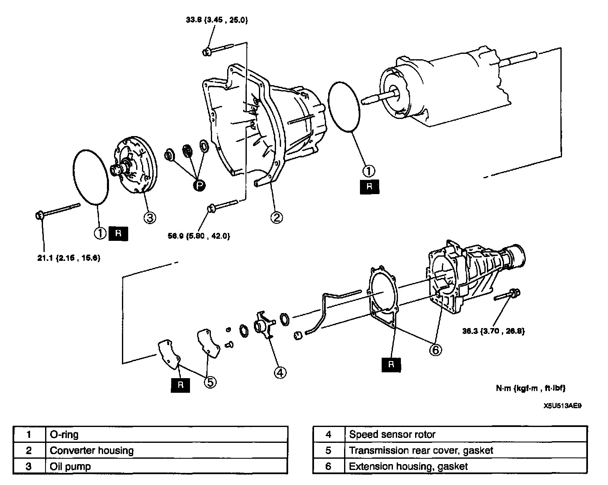
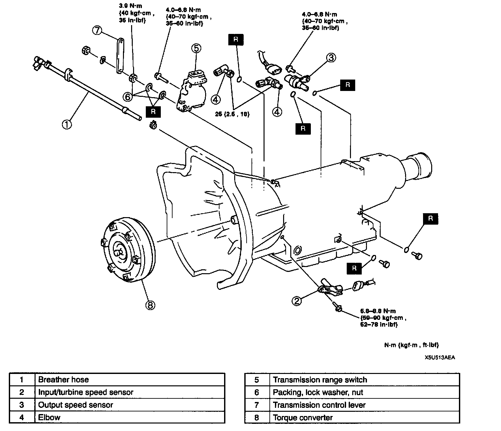
Components
Assembly Procedure
1. Apply ATF to the new oil seal.
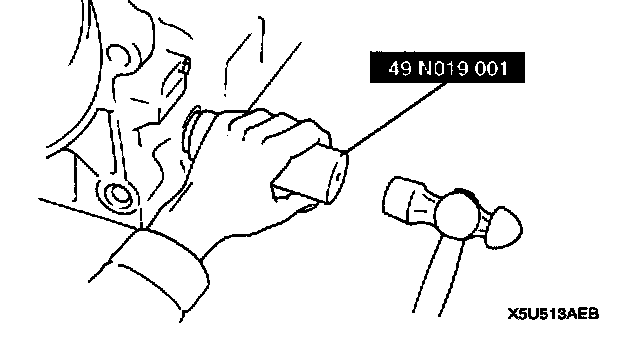
2. Install the oil seal to the transmission case using the SST.
Note:
^ To protect transmission case against damage, spread cloth on stand.
^ A stand of such size as shown in figure will facilitate work.
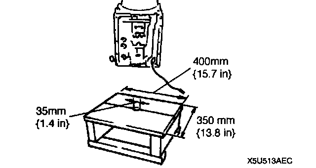
3. Prepare a stand as shown. It is necessary because work will be done with transmission case set upright from this step on.
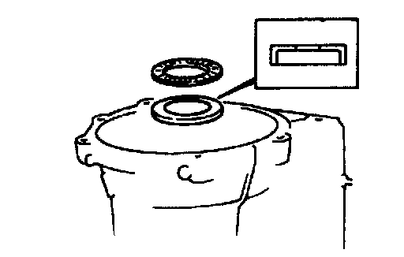
4. Install thrust output shaft bearing and thrust bearing output shaft race after lubricating them with petroleum jelly.
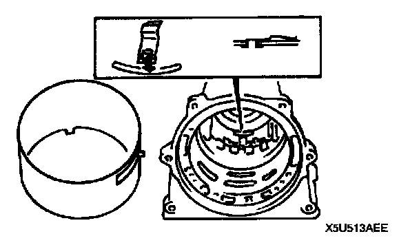
5. Install brake applying tube so that its lug A fits in B in transmission case. After installation, verify that 4 lugs along the underside of brake applying tube fit inside of reverse brake piston and leaf spring is installed properly.
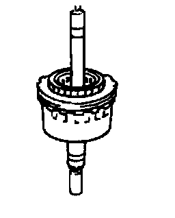
6. Remove reverse brake reaction plate of planetary gear component and align lugs of reverse brake plate, reverse brake disc and reverse brake packing plate. Install planetary gear component to transmission case so that aligned lugs fit in groove in transmission case.
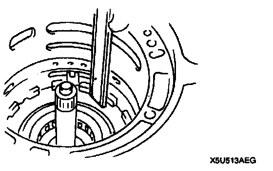
7. Measure clearance between reverse brake plate and lugs of transmission case.
Standard clearance 0.61 - 1.93 mm (O.03 - 0.07 inch)
8. If measured value is less than standard range, it is possible that something is installed improperly or dust or fluid is on reverse brake disk, etc. If it exceeds standard range, replace reverse brake disc, reverse brake plate or reverse brake backing plate.
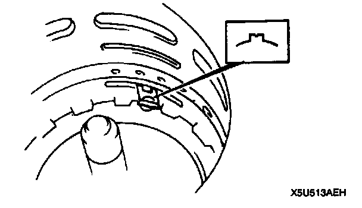
9. Install reverse brake reaction plate so that its lug with dent comes to the same position as leaf spring.

10. Using screwdriver with vinyl tape or the like wound at its tip, install retaining reaction plate ring. After installation, verify that ring is in groove securely.
Note: Unless retaining direct clutch ring of planetary sun gear is held, brake valve gets off center support and that will make it impossible to align fluid holes with bolt holes.
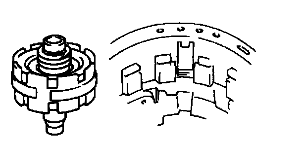
11. After confirming that lugs of all brake plates and brake discs are in grooves securely, hold retaining direct clutch ring of planetary sun gear, install center support component by aligning fluid holes in center support and transmission case.
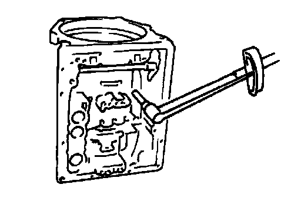
12. Tighten center support bolts by certain amount at a time till specified tightening torque is obtained.
Tightening torque 24 - 27 Nm (2.4 - 2.8 kgf-m, 18 - 20 ft. lbs.)
Note: Ends of splines in direct clutch cylinder and planetary sun gear should come almost in alignment.
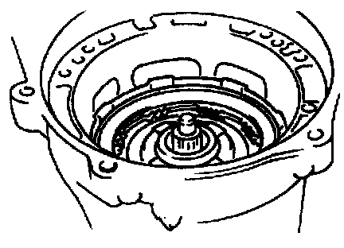
13. Install direct clutch component by aligning splines in direct clutch cylinder with planetary sun gear.
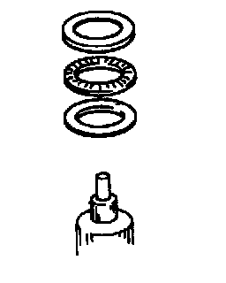
14. Apply petroleum jelly to forward clutch rear No. 1 race, thrust rear bearing, thrust bearing rear planetary ring race and install thrust bearing planetary ring race to direct clutch cylinder and forward clutch rear No. 1 race and thrust bearing to forward clutch hub.
Note: Use care not to let forward clutch rear No. 1 race and thrust bearing installed to forward clutch hub fall off.
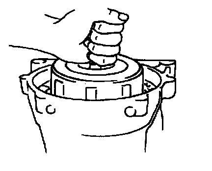
15. Install forward clutch component by putting all lugs of direct clutch disc hub together and matching them with groove cut in direct clutch input hub, and at the same time aligning splines in forward clutch hub with inner shaft.
Note: If measured value is less than standard value, remove forward clutch component and install it again.
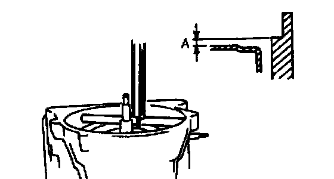
16. When clutch disc and plate have been replaced, inspect height difference between forward clutch input shaft and transmission case by measuring as shown in figure.
Standard height difference A: About 3.0 mm (about 0.1 inch)
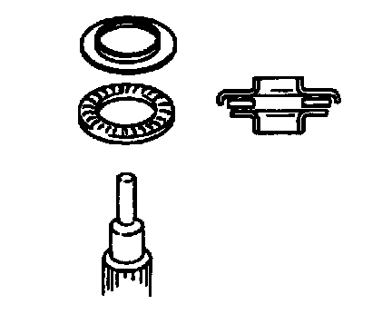
17. Apply petroleum jelly to thrust forward clutch bearing and install it to forward clutch input shaft. Also apply petroleum jelly to thrust rear race and install it to 4GR case.
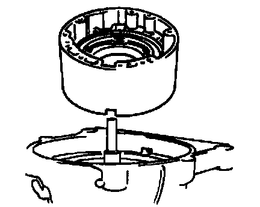
18. Install 4GR case by aligning cutouts in 4GR case and transmission case.
Note:
^ Fit claws of thrust planetary rear washer and thrust planetary ring front race into holes securely.
^ Use care not to drop thrust planetary rear washer installed to 4GR planetary gear.
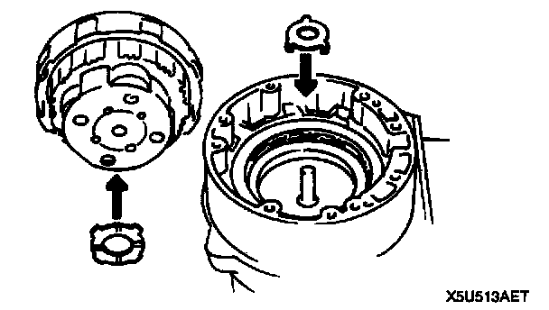
19. Apply petroleum jelly to thrust planetary rear washer and install it to 4GR planetary gear. Also apply petroleum jelly to thrust planetary ring front race and install it to planetary ring gear and then install 4GR input shaft component to 4GR case.
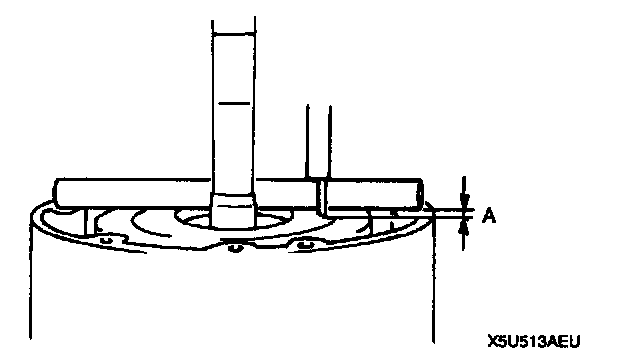
20. When clutch disc or plate has been replaced, inspect height difference between 4GR case and 4GR clutch cylinder by measuring it as shown in figure.
Standard height difference A: About 2.0 mm (O.08 inch)
21. Apply ATF to the new O-ring.
22. Install the O-ring to the 4GR housing.
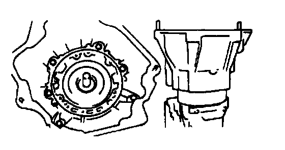
23. Install the converter housing.
Tightening torque
A: 33.8 Nm (3.45 kgf-m, 25.0 ft. lbs.)
B: 56.9 Nm (5.80 kgf-m, 42.0 ft. lbs.)
24. Apply petroleum jelly to bearing race.
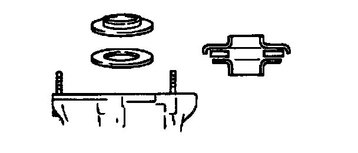
25. Install the bearing race to the 4GR clutch cylinder.
26. Apply petroleum jelly to front bearing component.
27. Install the front bearing component to the oil pump.
28. Apply ATF to new O-ring.
29. Install the O-ring to the oil pump component.
30. Install the oil pump component aligning bolt holes in 4GR case with those in transmission case oil pump component.
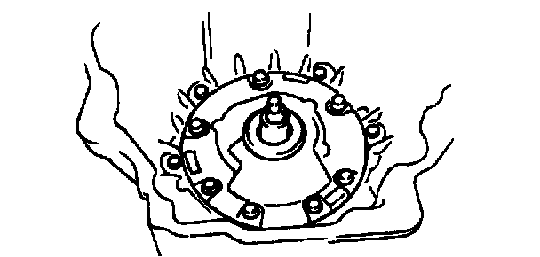
31. Apply seal packing to oil pump component bolts and tighten them by certain amount of torque each time one after another till specified torque is attained.
Tightening torque 21.1 Nm (2.15 kgf-m, 15.6 ft. lbs.)
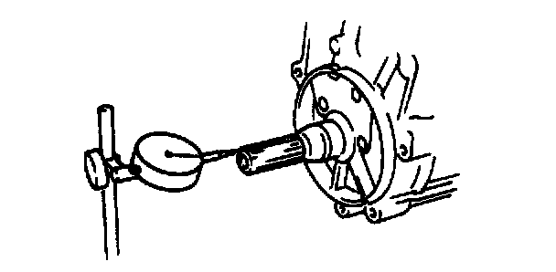
32. Take down transmission from stand and measure clearance in shaft direction by applying dial gauge to output shaft as shown in figure.
Standard clearance 0.3 - 0.9 mm (0.012 - 0.035 inch)
33. Inspect that inner shaft runs smoothly.
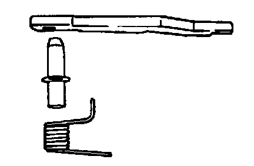
34. Install the parking lock pawl, pawl pin, and pawl spring to the transmission case.
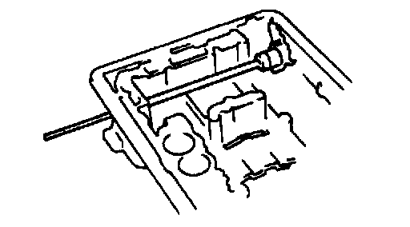
35. After installing new sleeve cover to manual shift lever, install manual shift shaft and manual shift lever to transmission case.
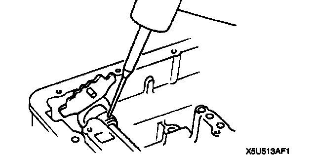
36. Align hole in manual shift shaft with that in manual shift lever and drive in new manual shift lever pin.
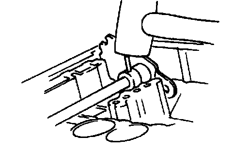
37. Align hole in sleeve cover with dent in manual shift lever and caulk securely with pin punch. Then verify that manual shift shaft turns smoothly.
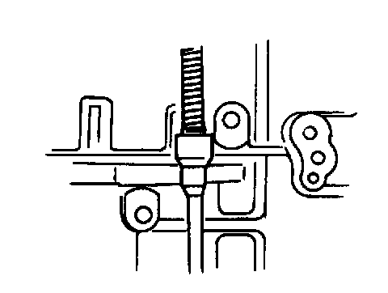
38. With parking lock rod installed to manual shift lever, place parking lock rod on parking lock pawl as shown in figure. Then install pawl bracket and tighten bracket screw to specified torque.
Tightening torque 5.9 - 8.8 Nm (60 - 90 kgf-cm, 53 - 78 inch lbs.)
39. Apply ATF to new O-ring.
40. Install the O-ring to the throttle cable.
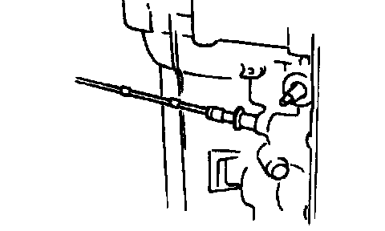
41. Install the throttle cable to the transmission case.
42. Apply ATF to new O-ring.
43. Install the O-ring to the accumulator piston.

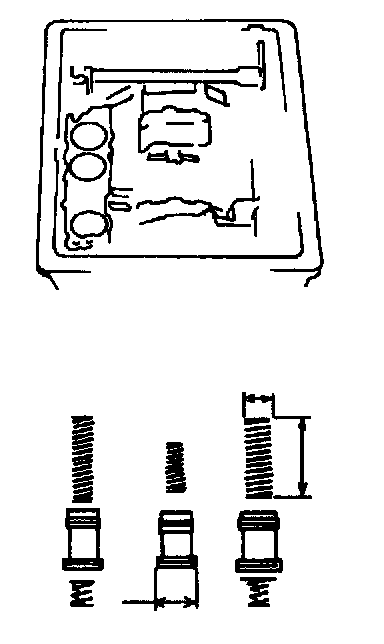
44. Install the accumulator piston and spring to the transmission case.
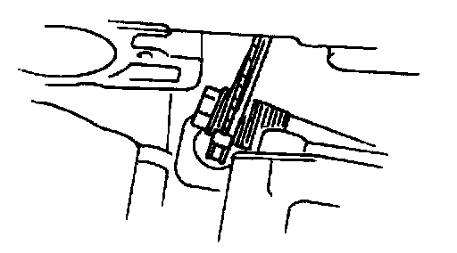
45. Lift the valve body a little and install nipple of throttle cable to throttle valve cam.
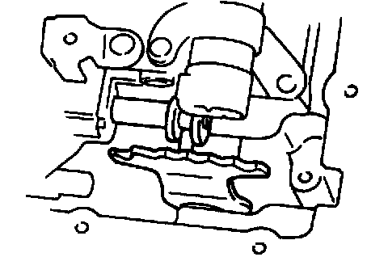
46. After confirming that accumulator piston is pushed all the way down, match pin of manual shaft lever with groove in manual valve.
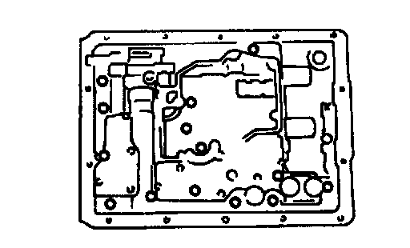
47. Fix valve body by using bolts with each nominal length as indicated in figure and tightening to specified torque.
Tightening torque 7.9 - 11.7 Nm (80 - 120 kgf-cm, 70 - 104 inch lbs.)
48. Install the new gaskets and oil strainer.
Tightening torque 5.0 - 5.8 Nm (50 - 60 kgf-cm, 44 - 52 inch lbs.)
49. Apply ATF to new O-ring.
50. Install the O-ring to the transmission wire.
51. Install the transmission wire to the transmission case.
Tightening torque 5.4 Nm (55 kgf-cm, 48 inch lbs.)
52. Connect the solenoid valve connectors.
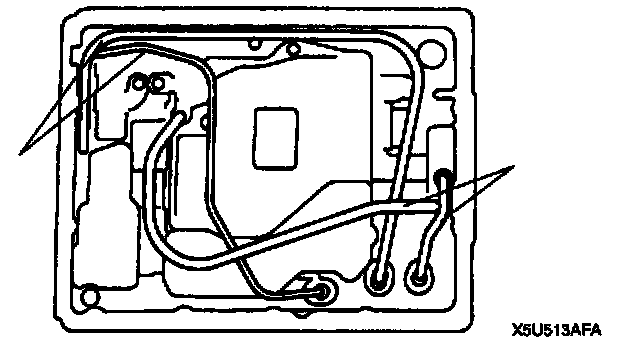
53. Install the tubes.
54. Install the gasket and oil pan.
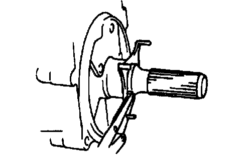
55. With wood rough key attached to output shaft, install rotor sensor by aligning its key groove with wood rough key and install retaining ring.
56. Install the new gasket and extension housing to the transmission case.
Tightening torque 36.3 Nm (3.70 kgf-m, 26.8 ft. lbs.)
57. Install the breather hose.
58. Apply ATF to the 0-ring.
59. Install the new O-ring to the input/turbine speed sensor.
60. Install the input/turbine speed sensor to the transmission case.
Tightening torque 5.8 - 8.8 Nm (59 - 90 kgf-cm, 52 - 78 inch lbs.)
61. Apply ATF to the O-ring.
62. Install the O-ring to the output speed sensor.
63. Install the output speed sensor to the transmission case.
Tightening torque 4.0 - 6.8 Nm (40 - 70 kgf-cm, 35 - 60 inch lbs.)
64. Apply ATF to the O-ring.
65. Install the O-ring to the elbow.
66. Install the elbow to the transmission case.
67. Install the lock bolt.
Tightening torque 25 Nm (2.5 kgf-m, 18 ft. lbs.)
68. Install the transmission range switch.
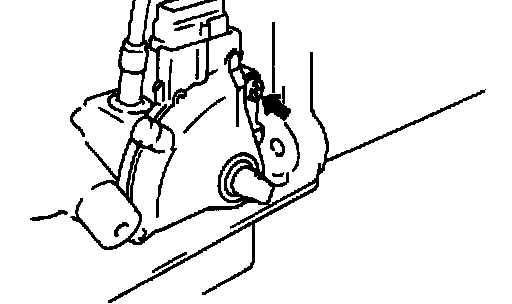
69. Hand-tighten the transmission range switch bolt.
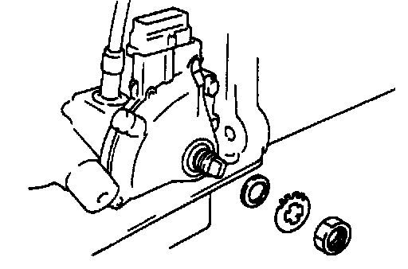
70. Install the new packing.
71. Install the new lock washer.
72. Tighten the nut.
Tightening torque 3.9 Nm (40 kgf-cm, 35 inch lbs.)
73. Bend claws of lock washer.
74. Rotate the manual shaft to the N position.
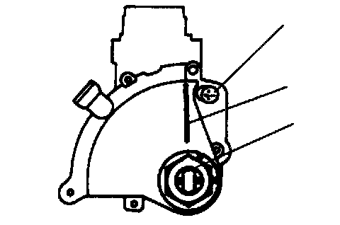
75. With neutral reference line and cut groove in switch aligned.
76. Tighten the transmission range switch mounting bolt.
Tightening torque 4.0 -6.8 Nm (40 - 70 kgf-cm, 35 - 60 inch lbs.)
77. Install the transmission control lever.
Note: Step 78 is for throttle cable replacement only.
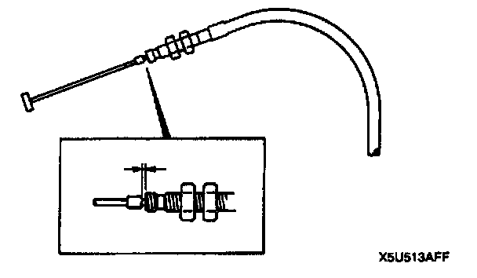
78. With throttle cable installed to the throttle cam, bend near the center of throttle cable to a radius of 200 mm (7.87 inch). Then, pull the throttle cable until there is no play or just before the throttle cam starts to move, and stake the adjustment mark at the position shown in the figure.
79. Install the throttle cable clamp.
80. Install the torque converter.
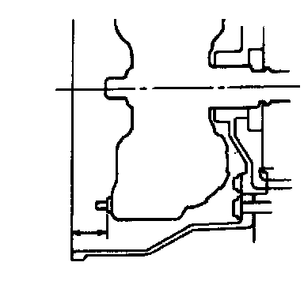
81. To ensure that the torque converter is installed accurately, measure distance A between the end of the torque converter and the face of the converter housing.
Distance A: 22.7 mm (0.88 inch)
Automatic Transmission Inspection
4GR Input Shaft And 4GR Clutch Preinspection One-Way Clutch Operation
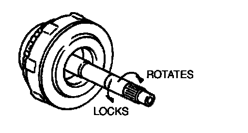
1. While holding the 4GR clutch drum, verify that the input shaft rotates smoothly when turned clockwise and locks when turned counterclockwise.
2. If not as specified, replace the 4GR input shaft and 4GR clutch component.
Clutch Operation
Caution: Applying compressed air to the assembled clutch pack for longer than 3 seconds at a time will damage the seal. Do not apply compressed air for more than the aforementioned time when testing the system.
1. Remove the 4GR planetary gear component.
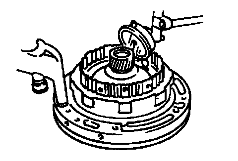
2. Using a dial indicator, measure the 4GR clutch piston stroke applying and releasing the compressed air as shown.
Air pressure 390 kPa (4.0 kgf/cm2, 57 psi) max.
Piston stroke 1.77 - 2.58 mm (0.07 - 0.101 inch)
3. If not as specified, replace parts as necessary.
4GR Case And 4GR Brake Preinspection Clutch Clearance
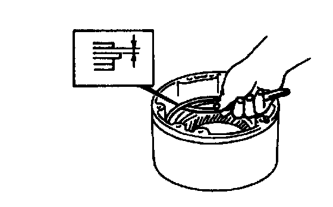
1. Measure the clearance.
Standard clearance 0.56 - 1.62 mm (O.03 - 0.06 inch)
2. If not as specified, replace parts as necessary.
Forward Clutch Preinspection Clutch Clearance
Caution: Applying compressed air to the assembled clutch pack for longer than 3 seconds at a time will damage the seal. Do not apply compressed air for more than the aforementioned time when testing the system.
1. Install the forward clutch to the 4GR case.
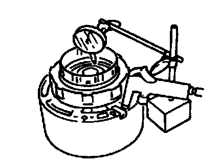
2. Using a dial indicator, measure the forward clutch piston stroke applying and releasing the compressed air as shown.
Air pressure 390 kPa (4.0 kgf/cm2, 57 psi) max.
Stroke 1.40 - 1.60 mm (0.056 - 0.062 inch)
3. If not as specified, replace parts as necessary.
Direct Clutch Preinspection
Clutch Clearance
Caution: : Applying compressed air to the assembled clutch pack for longer than 3 seconds at a time will damage the seal. Do not apply compressed air for more than the a fore mentioned time when testing the system.
1. Install the direct clutch component to the center support.
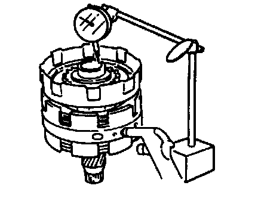
2. Using a dial indicator, measure the direct clutch piston stroke applying and releasing the compressed air as shown.
Air pressure 390 kPa (4.0 kgf/cm2, 57 psi) max.
Piston stroke 1.06 - 1.64 mm (O.04 - 0.06 inch)
3. If not as specified, replace parts as necessary.
Center Support Component (Front Brake, Rear Brake, And Front One-Way Clutch) Preinspection Clutch Clearance
Caution: Applying compressed air to the assembled clutch pack for longer than 3 seconds at a time will damage the seal. Do not apply compressed air for more than the aforementioned time when testing the system.
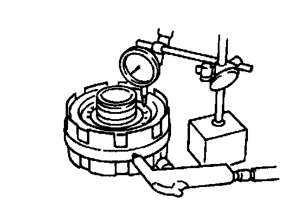
1. Using a dial indicator, measure the front clutch piston stroke applying and releasing the compressed air as shown.
Air pressure 390 kPa (4.0 kgf/cm2, 57 psi) max.
Piston stroke 0.78 - 1.32 mm (O.04 - 0.05 inch)
2. If not within the specification, replace the drive plate.
Caution: Applying compressed air to the assembled clutch pack for longer than 3 seconds at a time will damage the seal. Do not apply compressed air for more than the aforementioned time when testing the system.
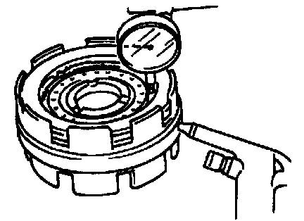
3. Using a dial indicator, measure the rear clutch piston stroke applying and releasing the compressed air as shown.
Air pressure 390 kPa (4.0 kgf/cm2, 57 psi) max.
Piston stroke 1.03 - 1.65 mm (O.05 - 0.06 inch)
4. If not within the specification, replace the drive plate.
Planetary Gear And Output Shaft (Rear One-Way Clutch And Low And Reverse Brake) Preinspection One-Way Clutch Operation
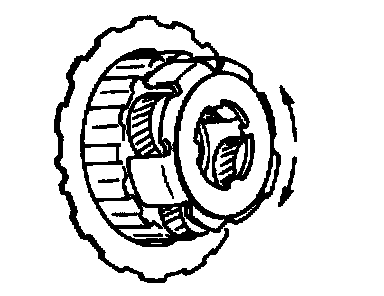
1. Install reverse brake reaction plate to front planetary gear. With reverse brake reaction plate fixed stationary, turn front planetary gear clockwise to inspect that it locks and then counterclockwise to inspect that it turns smoothly.
2. If not as specified, replace the one-way clutch.